"Cooking is an act of love"
Um dos meus hobbies preferidos é cozinhar, especialmente cozinhar para outras pessoas. Sou vegetariano à cerca de 3 anos e gosto de descobrir novas cozinhas, e novas formas de pensar sobre a comida. De certo modo, aquilo que fazemos é uma extensão de nós e daquilo que acreditámos, sendo isto que tento expressar na minha cozinha.
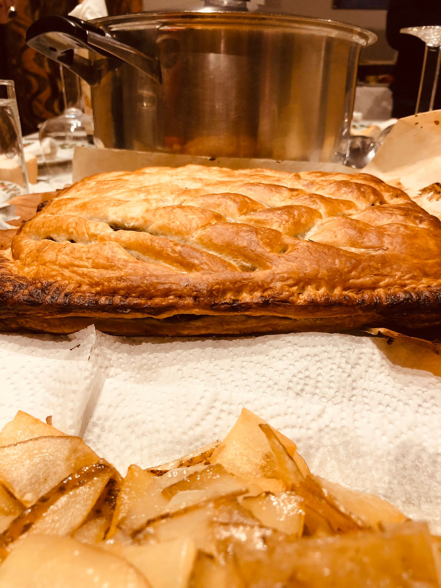
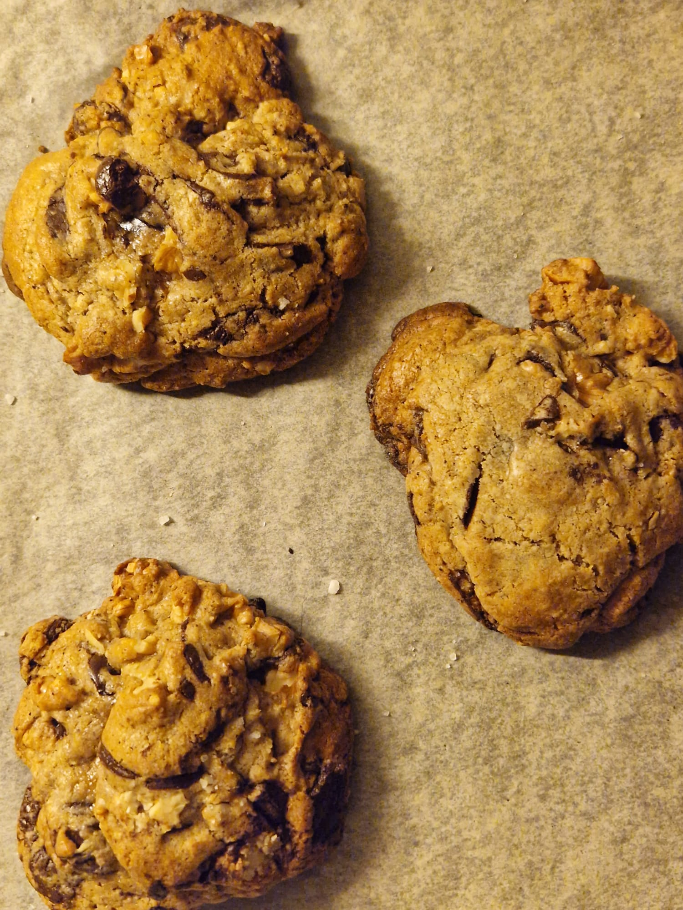
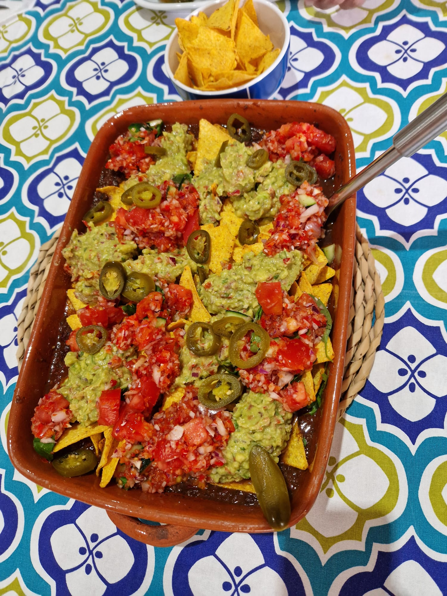
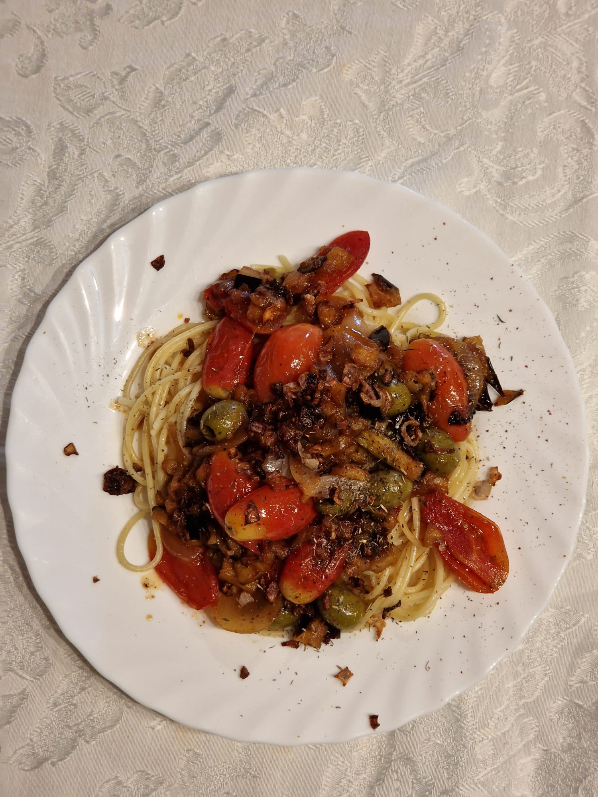
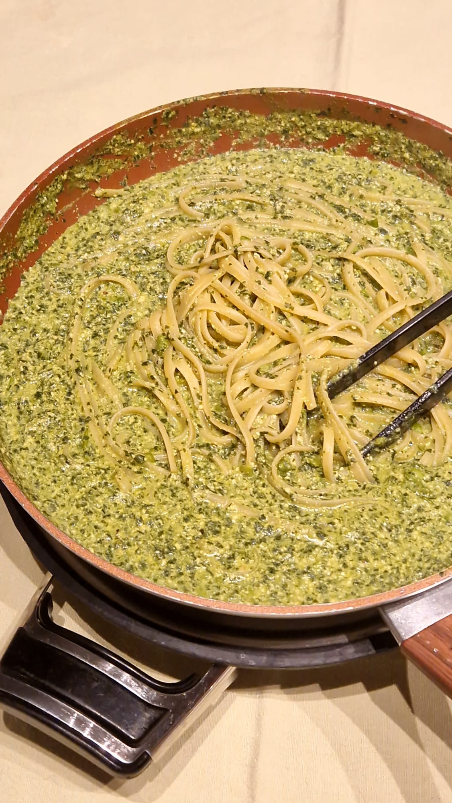
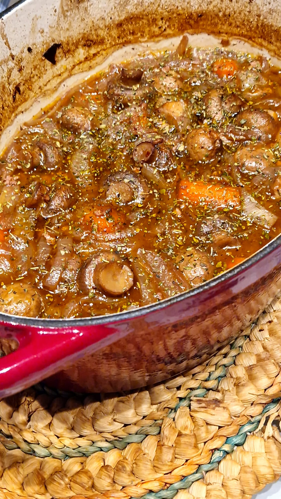
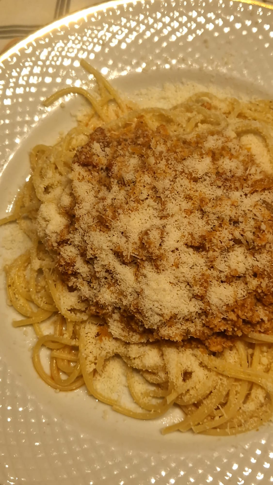
"I don't need sleep, I need answers!"
-Sheldon Cooper, TBBT
"Oh, I'm sorry. Did my back hurt your knife?"
-Rachel Green, Friends
"I love you." "It'll pass"
-Fleabag
"Dracarys"
-GOT
"That's what she said."
-Michael Scott, The Office
Ver séries, em particular sitcoms é sempre bom.

 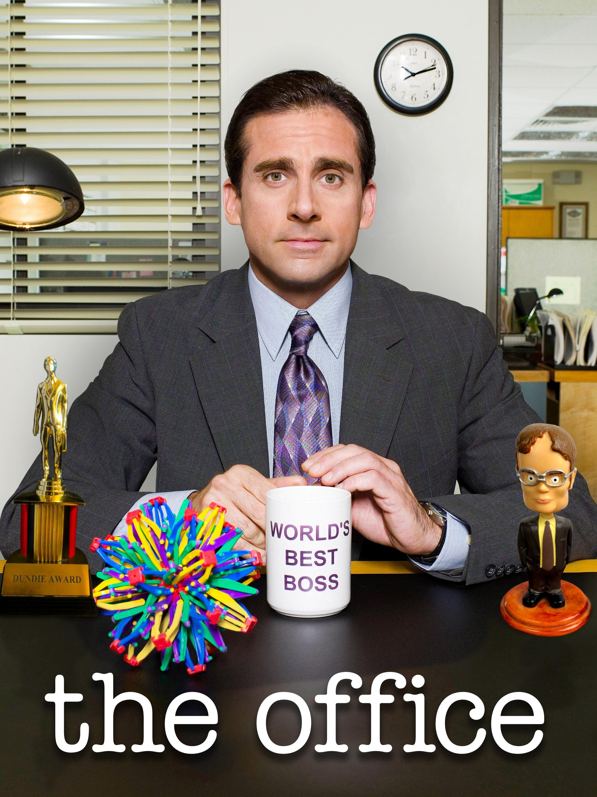
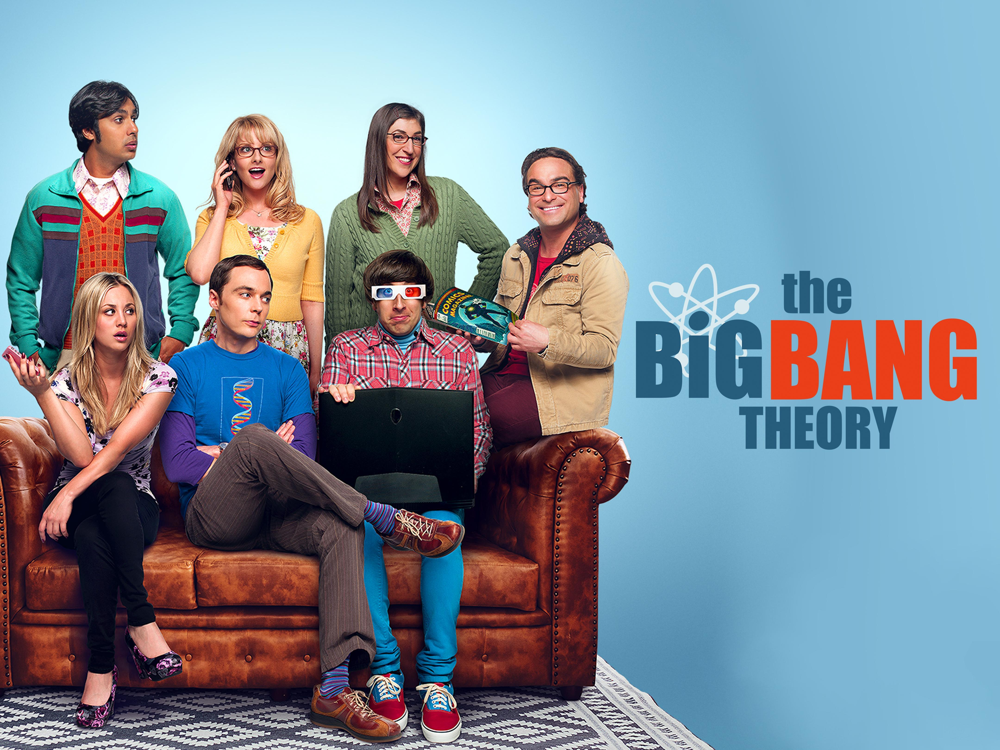
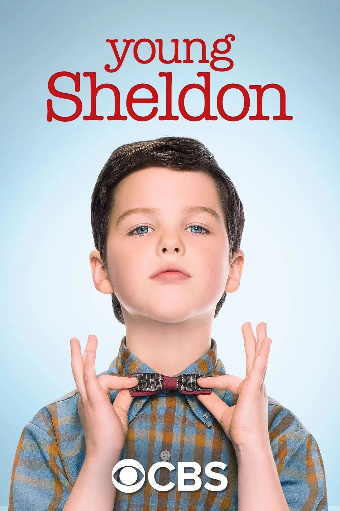
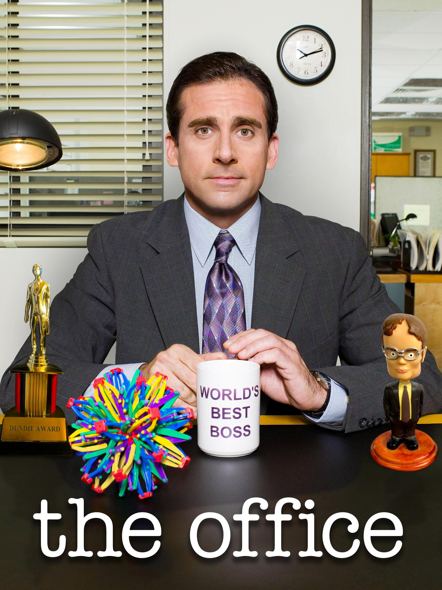
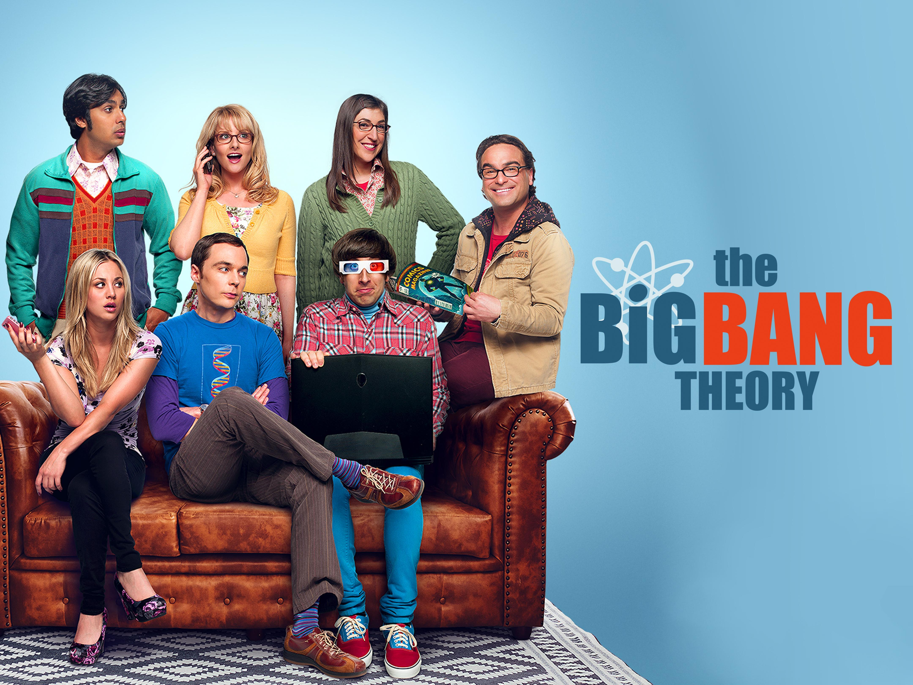
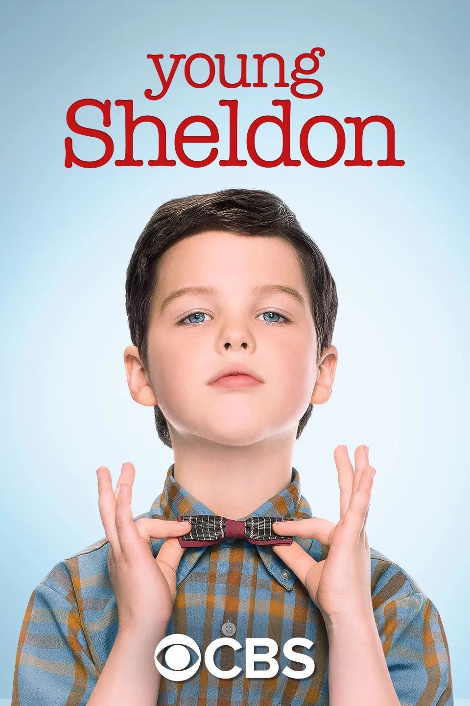